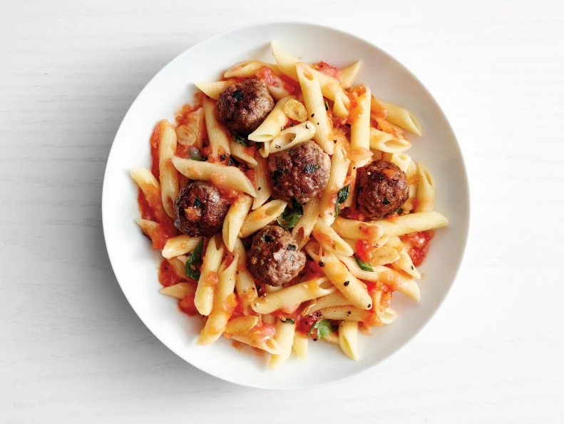

Penne with Vodka Sauce and Mini Meatballs Recipe
Home

Description:
This pasta recipe will list out all the required
ingredients along with step by step instructions to complete
the recipe.
The result should be a nice simple meal, perfect for dinner
at the end of the day.
Ingredients:
- Kosher Salt
- 12 ounces penne pasta
- 8 ounces ground beef chunk
- 3/4 cup grated parmesan cheese (about 1 1/2 ounces)
- 1/4 cup breadcrumbs
- 1 large egg, lightly beaten
- 3/4 cup chopped fresh basil
- 3 cloves garlic (1 minced, 2 sliced)
- 2 1/2 pounds beefsteak tomatoes
- 2 tablespoons extra-virgin olive oil
- 1/2 teaspoon ground pepper
- 1/4 cup vodka
- 1/4 cup heavy cream
- Freshly grounjd pepper
Steps:
- Bring a large pot of salted water to a boil. Add the
pasta and cook as the label directs. Reserve 1/2 cup
cooking water, then drain.
- Meanwhile, mix the beef, 1/4 cup parmesan, the
breadcrumbs, egg, 1/2 cup basil, the minced garlic and
1/2 teaspoon salt in a large bowl with your hands until
just combined. Form into 3/4-inch meatballs (about 20).
Grate the tomatoes into a medium bowl; discard the skins.
- Heat a large nonstick skillet over medium heat. Add the
olive oil, then the meatballs. Cook, turning, until
browned on all sides, 2 to 3 minutes. Add the sliced
garlic and cook until just golden, about 1 minute.
Gradually add the vodka, then the grated tomatoes and
cream. Bring to a simmer and cook until the sauce
thickens and the meatballs are cooked through, 8 to 10
minutes. Season with 1/2 teaspoon salt and a few grinds
of pepper.
-
Add the pasta and the remaining 1/4 cup basil to the
skillet; toss, adding the reserved cooking water as
needed to loosen. Remove from the heat and add the
remaining 1/2 cup parmesan; toss.